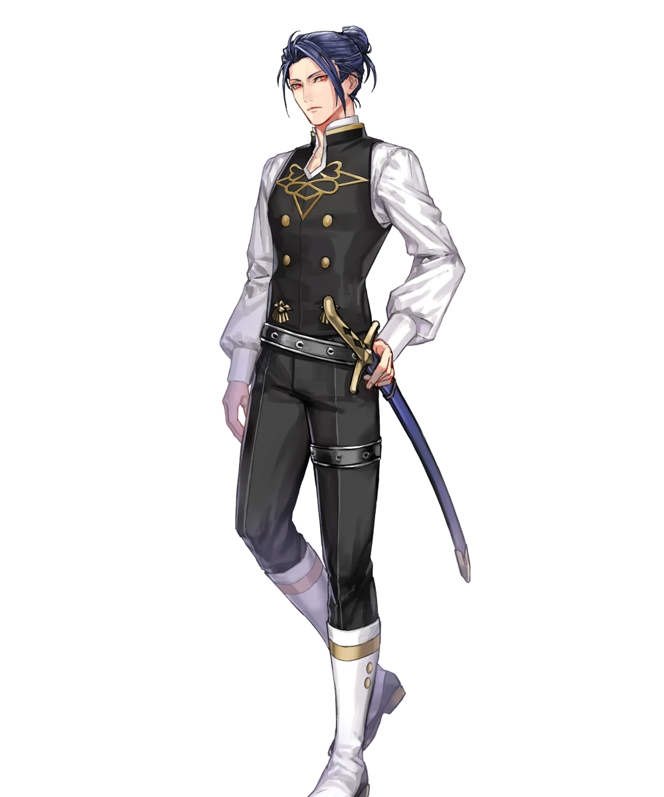

Biography Felix Hugo Fraldarius is the heir to House Fraldarius, one of the most prominent noble families in the Holy Kingdom of Faerghus. Recognized as a prodigy with the sword from a young age, Felix dedicates much of his time to training and refining his combat abilities. As the bearer of the Major Crest of Fraldarius, he is expected to uphold his family's legacy, though he often rejects the expectations placed upon him by others. Felix is also a childhood friend of Dimitri, Sylvain, and Ingrid, relationships that play an important role throughout the Blue Lions route.
Personality Blunt, independent, and highly competitive, Felix is known for speaking his mind regardless of how others may react. His sharp tongue often gives the impression that he is cold or uncaring, but beneath his stoic exterior lies someone who deeply values strength, honesty, and the people closest to him. Felix has little patience for arrogance or empty ideals, preferring actions over words. Although he often distances himself from others, his support conversations reveal a more thoughtful and compassionate side that he rarely shows openly.
Role in the Blue Lions Route Felix serves as both an ally and a source of challenge for Dimitri throughout the Blue Lions route. His skepticism toward traditional ideals of chivalry and heroism often contrasts with the beliefs of his classmates, leading to meaningful discussions about duty, honor, and the realities of war. As the story progresses, Felix confronts his own grief and personal struggles while learning that true strength extends beyond skill with a sword. His character arc contributes to many of the route's central themes surrounding loss, friendship, and personal growth.
Relationships Felix shares a long history with Dimitri, Sylvain, and Ingrid, having grown up together in the Kingdom of Faerghus. His relationship with Dimitri is particularly complex, shaped by both friendship and disagreement over Dimitri's ideals and actions. Although Felix often appears distant from his classmates, he gradually develops stronger bonds through his support conversations, revealing his loyalty to those he trusts despite his reserved nature.